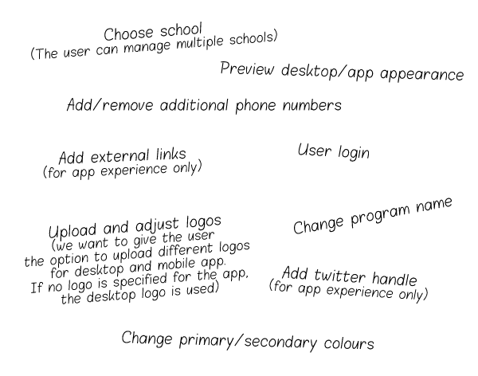
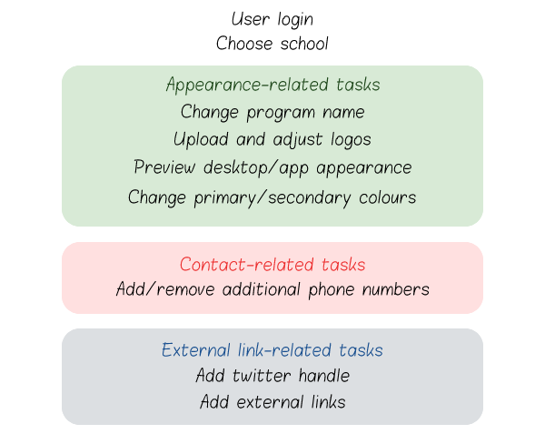
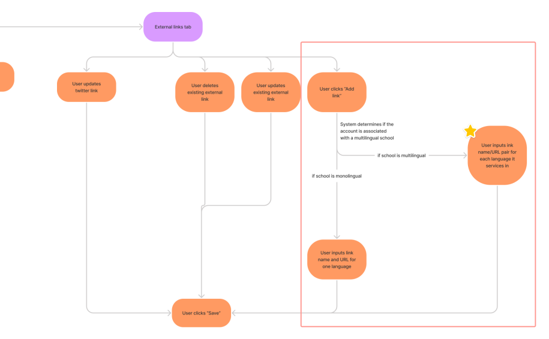

Client Customization Portal
Simplifying client customization on My SSP

Overview:
My Student Support Program (My SSP) is a desktop and mobile platform where high school and university students can access support and resources to improve their mental health and overall qualilty of life. If they so choose, the schools (the clients) can replace My SSP's default icon and colours with their own branding. However, someone from the school must email the My SSP team with the customization information and our developers would have to manually change the settings for each school. How might we simplify the process?
Task:
Design a new client portal (desktop only) where My SSP clients (e.g.: school administrators) can configure their personalized My SSP website and app experiences. Skip to prototype ↓
Solo designer
Figma
2 weeks (1 sprint)
Functionalities to include:
The required functionalities were identified by the business and developer teams.

I realized this can be grouped into 3 main categories for easier user navigation:

Thus, our user flow looks something like this:
 Click here to open the full image in a new tab
Click here to open the full image in a new tab
Considering different use cases:
The expected users of this tool are staff members at a school that uses My SSP. While the user experience would be the same for all users in most areas of the tool, there is one divergence: a multilingual school that offers resources in multiple languages must be able to add multiple titles and URLs under one external resource entry.
I imagined two users to illustrate this point:
Ava is the principal of a high school in a rural Ontario city. Since 90% of the student population counts English as their first language, all of the school's materials are in English.
Alistair is the headmaster of an international boarding school, located in Quebec. In addition to local students, the school draws in many students from China and Europe. Thus, the school's website and resources have versions in French, English, Mandarin, and Spanish.
Thus, a new branch is needed in our user flow:  Click here to open the full image in a new tab
Low-Fidelity Wireframes (excerpt)
Due to the remote work situation we decided to bypass paper drawings and jump right into low-fidelity designs.
Final High-Fidelity Mockups (excerpt)
I applied product branding to the low-fi designs.
Note: Since this is a recent feature, it makes use of the visual styles of the product rebrand, which was commenced January 2022. Thus, it differs visually from the older My SSP designs shown in this portfolio. (For instance, the main colour here is purple and not blue.)
Figma Prototypes
Prototype 1: The entire flow (user is from a monolingual school)
Prototype 2: The external links page (user is from a multilingual school)
Outcomes
Thanks to this tool, the school administrators have more convenience and control when it comes to customizing their My SSP experience. They no longer have to email My SSP reps to get customization done, and they can get immediate feedback on their app image and colour choices through the preview page.
Next Steps
- If usability testing was in scope in this project I would have like to conduct some tests with actual My SSP clients who are looking at the product for the first time.
- The business team has also indicated they want to add additional functions for "super admins": in addition to the existing features, "super admins" should be able to add, remove, and update regular admin users. Adding future features is easily achieved through the project's Agile sprint framework.